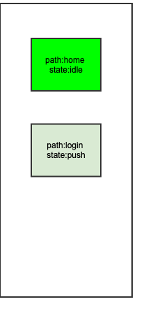

路由Push流程
一次Push流程的分析
关键代码
NavigatorState
@optionalTypeArgs
Future<T?> pushNamed<T extends Object?>(
String routeName, {
Object? arguments,
}) {
///_routeNamed方法
return push<T>(_routeNamed<T>(routeName, arguments: arguments)!);
}
@optionalTypeArgs
Future<T?> push<T extends Object?>(Route<T> route) {
assert(_debugCheckIsPagelessRoute(route));
_pushEntry(_RouteEntry(route, initialState: _RouteLifecycle.push));
return route.popped;
}
void _pushEntry(_RouteEntry entry) {
_history.add(entry);
_flushHistoryUpdates();
_afterNavigation(entry.route);
}
///最关键的一个方法
void _flushHistoryUpdates({bool rearrangeOverlay = true}) {
assert(_debugLocked && !_debugUpdatingPage);
// Clean up the list, sending updates to the routes that changed. Notably,
// we don't send the didChangePrevious/didChangeNext updates to those that
// did not change at this point, because we're not yet sure exactly what the
// routes will be at the end of the day (some might get disposed).
int index = _history.length - 1;
_RouteEntry? next;
_RouteEntry? entry = _history[index];
_RouteEntry? previous = index > 0 ? _history[index - 1] : null;
bool canRemoveOrAdd = false; // Whether there is a fully opaque route on top to silently remove or add route underneath.
Route<dynamic>? poppedRoute; // The route that should trigger didPopNext on the top active route.
bool seenTopActiveRoute = false; // Whether we've seen the route that would get didPopNext.
final List<_RouteEntry> toBeDisposed = <_RouteEntry>[];
while (index >= 0) {
switch (entry!.currentState) {
case _RouteLifecycle.add:
assert(rearrangeOverlay);
entry.handleAdd(
navigator: this,
previousPresent: _getRouteBefore(index - 1, _RouteEntry.isPresentPredicate)?.route,
);
assert(entry.currentState == _RouteLifecycle.adding);
continue;
case _RouteLifecycle.adding:
if (canRemoveOrAdd || next == null) {
entry.didAdd(
navigator: this,
isNewFirst: next == null,
);
assert(entry.currentState == _RouteLifecycle.idle);
continue;
}
break;
case _RouteLifecycle.push:
case _RouteLifecycle.pushReplace:
case _RouteLifecycle.replace:
assert(rearrangeOverlay);
entry.handlePush(
navigator: this,
previous: previous?.route,
previousPresent: _getRouteBefore(index - 1, _RouteEntry.isPresentPredicate)?.route,
isNewFirst: next == null,
);
assert(entry.currentState != _RouteLifecycle.push);
assert(entry.currentState != _RouteLifecycle.pushReplace);
assert(entry.currentState != _RouteLifecycle.replace);
if (entry.currentState == _RouteLifecycle.idle) {
continue;
}
break;
case _RouteLifecycle.pushing: // Will exit this state when animation completes.
if (!seenTopActiveRoute && poppedRoute != null)
entry.handleDidPopNext(poppedRoute);
seenTopActiveRoute = true;
break;
case _RouteLifecycle.idle:
if (!seenTopActiveRoute && poppedRoute != null)
entry.handleDidPopNext(poppedRoute);
seenTopActiveRoute = true;
// This route is idle, so we are allowed to remove subsequent (earlier)
// routes that are waiting to be removed silently:
canRemoveOrAdd = true;
break;
case _RouteLifecycle.pop:
if (!seenTopActiveRoute) {
if (poppedRoute != null)
entry.handleDidPopNext(poppedRoute);
poppedRoute = entry.route;
}
entry.handlePop(
navigator: this,
previousPresent: _getRouteBefore(index, _RouteEntry.willBePresentPredicate)?.route,
);
assert(entry.currentState == _RouteLifecycle.popping);
canRemoveOrAdd = true;
break;
case _RouteLifecycle.popping:
// Will exit this state when animation completes.
break;
case _RouteLifecycle.remove:
if (!seenTopActiveRoute) {
if (poppedRoute != null)
entry.route.didPopNext(poppedRoute);
poppedRoute = null;
}
entry.handleRemoval(
navigator: this,
previousPresent: _getRouteBefore(index, _RouteEntry.willBePresentPredicate)?.route,
);
assert(entry.currentState == _RouteLifecycle.removing);
continue;
case _RouteLifecycle.removing:
if (!canRemoveOrAdd && next != null) {
// We aren't allowed to remove this route yet.
break;
}
entry.currentState = _RouteLifecycle.dispose;
continue;
case _RouteLifecycle.dispose:
// Delay disposal until didChangeNext/didChangePrevious have been sent.
toBeDisposed.add(_history.removeAt(index));
entry = next;
break;
case _RouteLifecycle.disposed:
case _RouteLifecycle.staging:
assert(false);
break;
}
index -= 1;
next = entry;
entry = previous;
previous = index > 0 ? _history[index - 1] : null;
}
// Informs navigator observers about route changes.
_flushObserverNotifications();
// Now that the list is clean, send the didChangeNext/didChangePrevious
// notifications.
_flushRouteAnnouncement();
// Announce route name changes.
if (widget.reportsRouteUpdateToEngine) {
final _RouteEntry? lastEntry = _history.cast<_RouteEntry?>().lastWhere(
(_RouteEntry? e) => e != null && _RouteEntry.isPresentPredicate(e), orElse: () => null,
);
final String? routeName = lastEntry?.route.settings.name;
if (routeName != null && routeName != _lastAnnouncedRouteName) {
SystemNavigator.routeInformationUpdated(location: routeName);
_lastAnnouncedRouteName = routeName;
}
}
// Lastly, removes the overlay entries of all marked entries and disposes
// them.
for (final _RouteEntry entry in toBeDisposed) {
for (final OverlayEntry overlayEntry in entry.route.overlayEntries)
overlayEntry.remove();
entry.dispose();
}
if (rearrangeOverlay) {
overlay?.rearrange(_allRouteOverlayEntries);
}
if (bucket != null) {
_serializableHistory.update(_history);
}
}
流程分析
为了方便起见，假设路由栈里面仅有一个首页（home），我们推入一个新的登录页面（login）。调用链：
- NavigatorState.push
(Route route) - NavigatorState._pushEntry(_RouteEntry(route, initialState: _RouteLifecycle.push))
NavigatorState._flushHistoryUpdates()：这个方法会以从尾到头的方向遍历_history列表，此时_history列表中_RouteEntry的状态如下图 
_RouteEntry.handlePush()：这个方法会将login页面的page添加到Overlay,
- Route.didPush():启动route配置的动画，并将_RouteEntry的状态设置为pushing，
- whenCompleteOrCancel：当动画结束将_RouteEntry的状态设置为idle
- 再次调用NavigatorState._flushHistoryUpdates()方法。 这里的2、3流程是异步回调。
在4.1之后，继续循环遍历_history列表，现在只剩一个home的Entry，并且是idle状态的，所以并不会有什么操作。接下来进入_flushObserverNotifications()方法，这里有三个重要的属性：
- _effectiveObservers：由Widget传递过来。也就是在MaterialApp配置的navigatorObservers属性。
- _observedRouteAdditions：在add或者push的流程添加_NavigatorPushObservation、_NavigatorReplaceObservation
_observedRouteDeletions：在pop或者remove的流程添加_NavigatorPopObservation、_NavigatorRemoveObservation。
void _flushObserverNotifications() { if (_effectiveObservers.isEmpty) { _observedRouteDeletions.clear(); _observedRouteAdditions.clear(); return; } ///1.当前流程 while (_observedRouteAdditions.isNotEmpty) { final _NavigatorObservation observation = _observedRouteAdditions.removeLast(); _effectiveObservers.forEach(observation.notify); } while (_observedRouteDeletions.isNotEmpty) { final _NavigatorObservation observation = _observedRouteDeletions.removeFirst(); _effectiveObservers.forEach(observation.notify); } }目前只需要关心_observedRouteAdditions在push中添加_NavigatorPushObservation的情况。会进入注释1。一下代码就是_NavigatorPushObservation的notify方法的实现。以此类推可以猜测其他三种类型也是回调observer的对于方法。
@override void notify(NavigatorObserver observer) { observer.didPush(primaryRoute, secondaryRoute); }
{kind=link}
_flushRouteAnnouncement()：这个方法的作用是更新每个route的前后route，并使用Routed的didChangeNext、didChangePrevious来更新route本身的一些内容。
将route的改变通知给平台（iOS、Android、Web等等），不用关心。
- 通知Overlay更新图层
for (final _RouteEntry entry in toBeDisposed) { for (final OverlayEntry overlayEntry in entry.route.overlayEntries) overlayEntry.remove(); entry.dispose(); } if (rearrangeOverlay) { overlay?.rearrange(_allRouteOverlayEntries); }